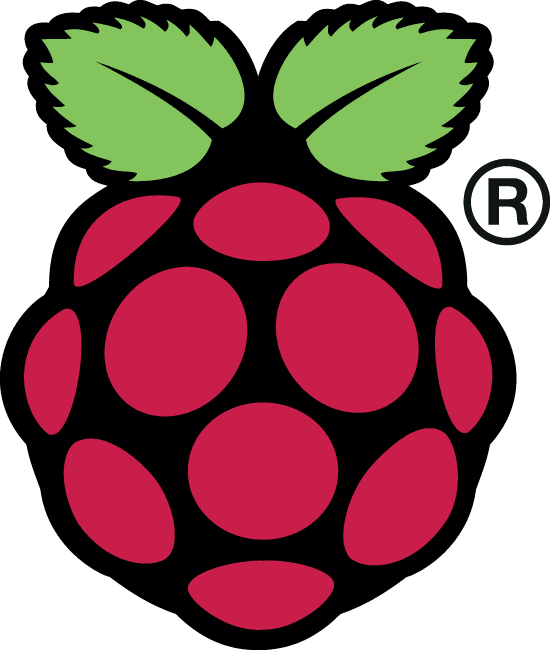
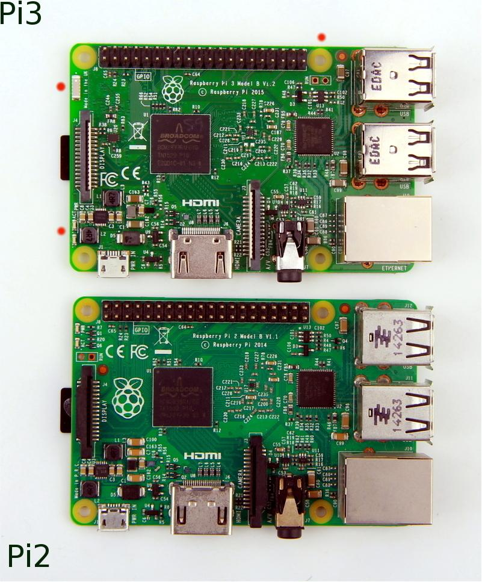
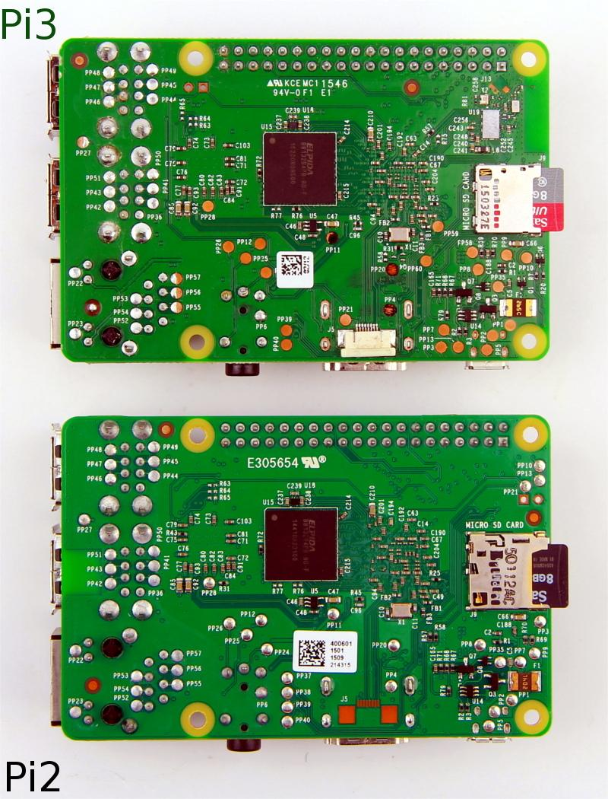
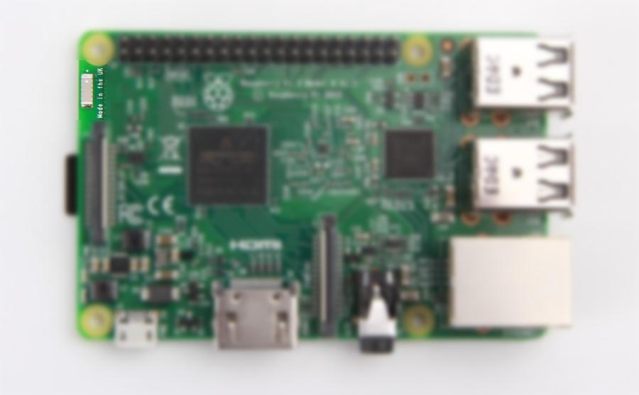
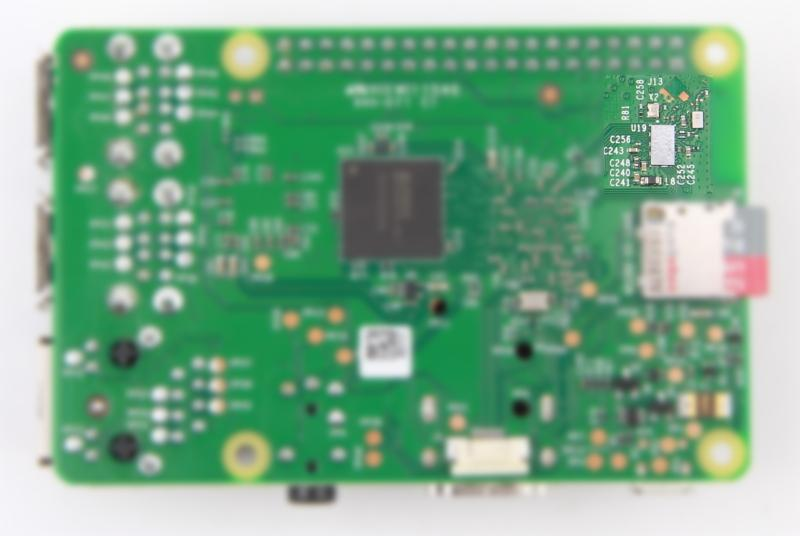

Raspberry Pi® is an ARM based credit card sized SBC(Single Board Computer) created by Raspberry Pi Foundation. Raspberry Pi runs Debian based GNU/Linux operating system Raspbian and ports of many other OSes exist for this SBC.

Raspberry Pi Foundation has announced a new version Raspberry Pi 3. Read announcement here. With on-board WiFi / Bluetooth support and an 64bit improved Processor, Raspberry Pi v3 will be an exciting board for Makers, Engineers and Students.

| Board | Raspberry Pi 2 Model B | Raspberry Pi 3 Model B |
|---|---|---|
| Processor | Broadcom BCM2836 | Broadcom BCM2837 |
| CPU Core | Quadcore ARM Cortex-A7, 32Bit | Quadcore ARM Cortex-A53, 64Bit |
| Clock Speed | 900 MHz | 1.2GHz (Roughly 50% faster than Pi2) |
| RAM | 1 GB | 1 GB |
| GPU | 250 MHz VideoCore IV® | 400 MHz VideoCore IV® |
| Network Connectivity | 1 x 10 / 100 Ethernet (RJ45 Port) | 1 x 10 / 100 Ethernet (RJ45 Port) |
| Wireless Connectivity | None | 802.11n wireless LAN (WiFi) and Bluetooth 4.1 |
| USB Ports | 4 x USB 2.0 | 4 x USB 2.0 |
| GPIOs | 2 x 20 Pin Header | 2 x 20 Pin Header |
| Camera Interface | 15-pin MIPI | 15-pin MIPI |
| Display Interface | DSI 15 Pin / HDMI Out / Composite RCA | DSI 15 Pin / HDMI Out / Composite RCA |
| Power Supply (Current Capacity) | 1.8 A | 2.5 A |
 
Broadcom BCM2837 SoC
A ceramic chip antenna is used by WiFi and Bluetooth 4.1 SoC BCM43438. The chip antenna moves the indicator LEDs that were present in Pi 2 to the lower side of PCB.

The ACT and PWR LEDs are repositioned as shown below in Raspberry Pi 3 when compared to Pi 2.
The RUN pin-header is also repositioned
WiFi and Bluetooth 4.1 (Classic and LE) are provided by Broadcom BCM43438 chip

Buy:
This page will be updated with new information as and when available.
All trademarks are the property of their respective owners. Raspberry Pi and its logo are trademarks of the Raspberry Pi Foundation.
Copyright (c) 2008-2016 Seeed Development Limited (www.seeedstudio.com / www.seeed.cc)